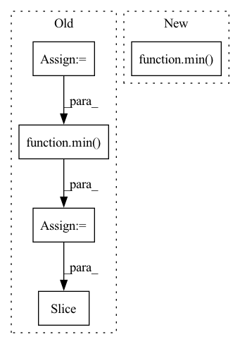

Pattern ID :30381

Before Change
return self.scheduler.timesteps.to(device), num_inference_steps
else:
// get the original timestep using init_timestep
offset = self.scheduler.config.get("steps_offset", 0)
init_timestep = int(num_inference_steps * strength) + offset
init_timestep = min(init_timestep, num_inference_steps)
t_start = max(num_inference_steps - init_timestep + offset, 0)
timesteps = self.scheduler.timesteps[t_start:].to(device)
return timesteps, num_inference_steps - t_start
def run_safety_checker(self, image, device, dtype):
After Change
return self.scheduler.timesteps.to(device), num_inference_steps
else:
// get the original timestep using init_timestep
init_timestep = min(int(num_inference_steps * strength), num_inference_steps)
t_start = max(num_inference_steps - init_timestep, 0)
timesteps = self.scheduler.timesteps[t_start * self.scheduler.order :]
In pattern: SUPERPATTERN
Frequency: 3
Non-data size: 5
Instances
Fragment ID: 89864051
Project Name: huggingface/diffusers
Commit Name: 2ced899cc7cff5c37f2186819c90538ce301908c
Time: 2023-04-27
Author: patrick.v.platen@gmail.com
File Name: examples/community/lpw_stable_diffusion.py
M Class Name: StableDiffusionLongPromptWeightingPipeline
N Class Name: StableDiffusionLongPromptWeightingPipeline
M Method Name: get_timesteps(5)
N Method Name: get_timesteps(5)
M Parent Class: DiffusionPipeline,TextualInversionLoaderMixin,FromCkptMixin,LoraLoaderMixin
N Parent Class: StableDiffusionPipeline
M File Name: examples/community/lpw_stable_diffusion.py
N File Name: examples/community/lpw_stable_diffusion.py
M Start Line: 583
M End Line: 588
N Start Line: 776
N End Line: 779
'>
Before Change
return self.scheduler.timesteps.to(device), num_inference_steps
else:
// get the original timestep using init_timestep
offset = self.scheduler.config.get("steps_offset", 0)
init_timestep = int(num_inference_steps * strength) + offset
init_timestep = min(init_timestep, num_inference_steps)
t_start = max(num_inference_steps - init_timestep + offset, 0)
timesteps = self.scheduler.timesteps[t_start:].to(device)
return timesteps, num_inference_steps - t_start
def run_safety_checker(self, image, device, dtype):
After Change
return self.scheduler.timesteps.to(device), num_inference_steps
else:
// get the original timestep using init_timestep
init_timestep = min(int(num_inference_steps * strength), num_inference_steps)
t_start = max(num_inference_steps - init_timestep, 0)
timesteps = self.scheduler.timesteps[t_start * self.scheduler.order :]
'>
Fragment ID: 89864050
Project Name: huggingface/diffusers
Commit Name: 9965cb50eac12e397473f01535aab43aae76b4ab
Time: 2023-04-22
Author: SKYTNT@outlook.com
File Name: examples/community/lpw_stable_diffusion.py
M Class Name: StableDiffusionLongPromptWeightingPipeline
N Class Name: StableDiffusionLongPromptWeightingPipeline
M Method Name: get_timesteps(5)
N Method Name: get_timesteps(5)
M Parent Class: DiffusionPipeline,TextualInversionLoaderMixin,FromCkptMixin,LoraLoaderMixin
N Parent Class: StableDiffusionPipeline
M File Name: examples/community/lpw_stable_diffusion.py
N File Name: examples/community/lpw_stable_diffusion.py
M Start Line: 583
M End Line: 588
N Start Line: 776
N End Line: 779
'>
Before Change
for _ in range(self.d_sample_training_epochs):
for corpus, fake_data in zip(train_data, fake_dataloader):
// interaction = interaction.to(self.device)
real_data = corpus["target_idx"]
min_batch = min(real_data.shape[0], fake_data.shape[0])
losses = self.model.calculate_d_train_loss(real_data[ : min_batch], fake_data[ : min_batch], epoch_idx=epoch_idx)
total_loss = self._optimize_step(losses, total_loss, self.model.discriminator, self.d_optimizer)
return total_loss / len(train_data) / self.d_sample_training_epochs
After Change
losses = self.model.calculate_d_train_loss(real_data, fake_data, epoch_idx=epoch_idx)
total_loss = self._optimize_step(losses, total_loss, self.model.discriminator, self.d_optimizer)
return total_loss / len(min(real_dataloader, fake_dataloader)) / self.d_sample_training_epochs
def _adversarial_train_epoch(self, train_data, epoch_idx):
rAdversarial training in an epoch
'>
Fragment ID: 89864048
Project Name: rucaibox/textbox
Commit Name: d2eba1b6e5e8b3a117c7ee4254a228832a52d500
Time: 2020-11-18
Author: 1020139164@qq.com
File Name: textbox/trainer/trainer.py
M Class Name: GANTrainer
N Class Name: GANTrainer
M Method Name: _d_train_epoch(3)
N Method Name: _d_train_epoch(3)
M Parent Class: Trainer
N Parent Class: Trainer
M File Name: textbox/trainer/trainer.py
N File Name: textbox/trainer/trainer.py
M Start Line: 474
M End Line: 485
N Start Line: 481
N End Line: 491